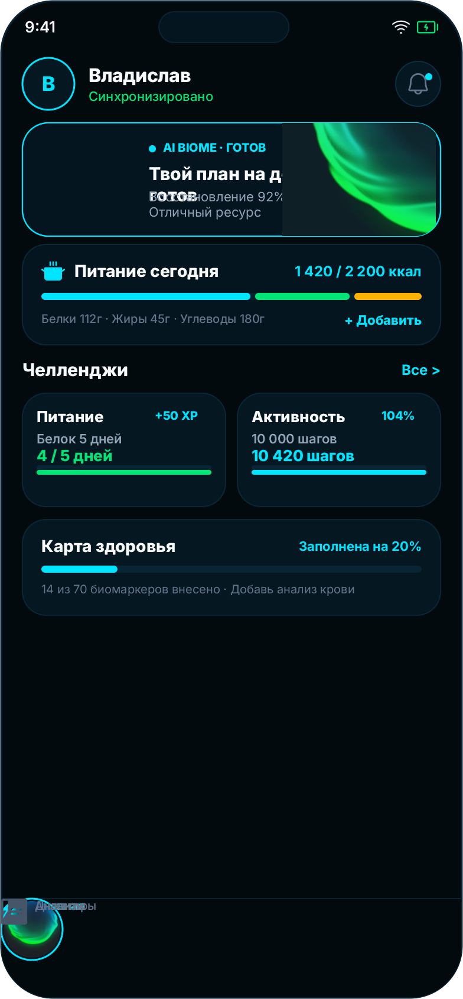
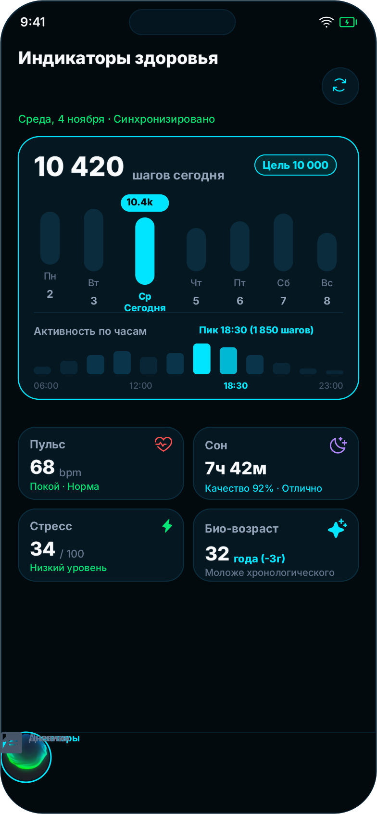
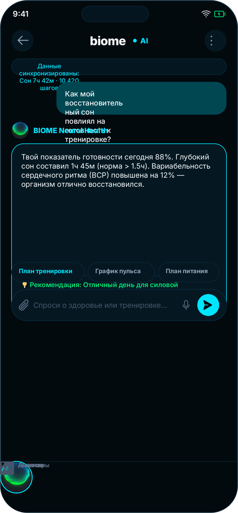
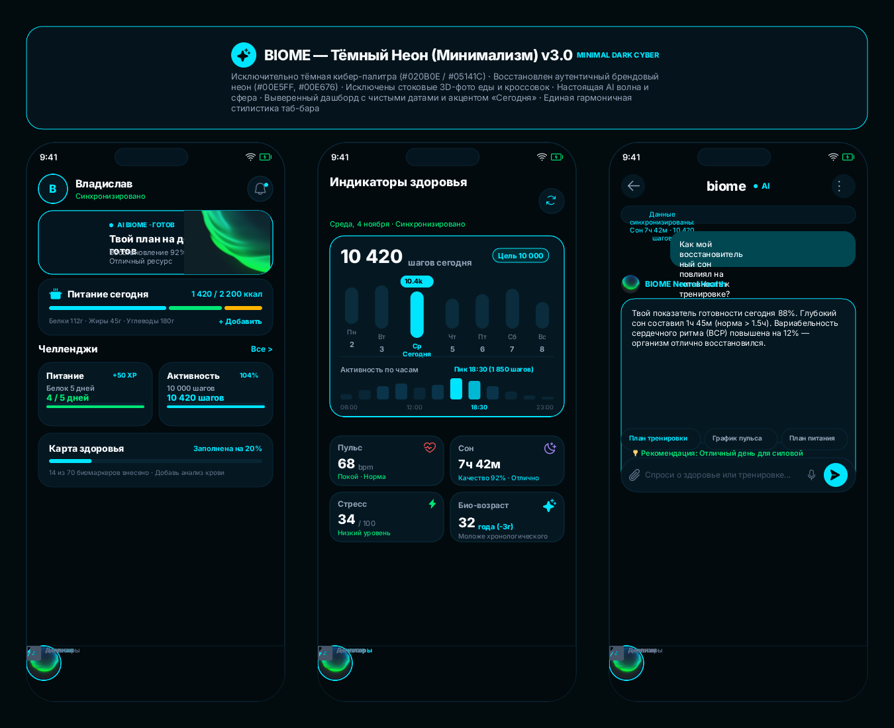
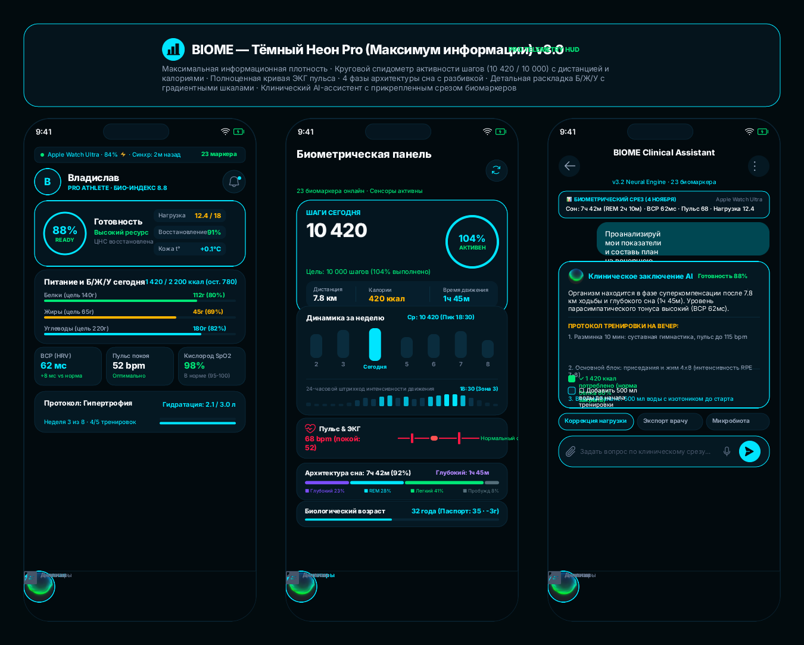

×
Полный возврат к оригинальной ДНК продукта: глубокий кибер-обсидиан (#020B0E),
фирменный электрический циан (#00E5FF) и изумрудный неон.
Убраны стоковые 3D-фото еды и кроссовок. Вместо них — высокотехнологичная биометрическая телеметрия,
подлинная AI-волна и 3D-сфера бренда.



Наглядное сопоставление оригинального приложения и предложенных решений редизайна.
| Параметр | Оригинал (Было) | Версия 1 (Минимализм) | Версия 2 (Pro HUD) |
|---|---|---|---|
| Цветовая гамма | Тёмная, но со случайными градиентами и блёклыми блоками | Глубокий кибер-обсидиан (#020B0E) + аккуратный неон |
Высококонтрастный биометрический HUD (#020B0E + #00E5FF) |
| Дашборд шагов | Сжатые шкалы, наезд подписей, текстовое описание активности | Просторная 7-дневная шкала, даты без рамок, 12-столбчатый график | Круговой мульти-индикатор (шаги, км, ккал) + 24h штрихкод активности |
| Графика метрик | Разрозненные 2D и 3D иконки разных стилей | Чистая векторная телеметрия + оригинальная AI-волна бренда | Кривая ЭКГ, 4 фазы сна, ползунок биологического возраста |
| AI-Ассистент | Громоздкие сообщения простыней без структуры | Лаконичный диалог с фокусом на сне и тренировке + чипы | Клиническое заключение с прикрепленным био-срезом и чеклистом |
| Нижний таб-бар | Смешение контурных и залитых иконок, плоская средняя кнопка | Единый залитый иконочный сет + светящаяся 3D-сфера бренда | Инженерный HUD таб-бар с активной подсветкой разделов |
Нажмите на любой борд для просмотра в сверхвысоком разрешении.


BIOME задумывался как высокотехнологичный персональный ассистент биохакинга. Мы вернули тёмную тему и неоновое сияние, устранив ощущение легковесного бытового трекера.
Никаких стоковых картинок еды или обуви. Все визуализации строго функциональны: диаграммы, гистограммы, кольца готовности и фазы сна несут прямую информационную пользу.
Минималистичная версия идеальна для повседневного быстрого чека здоровья, а Pro-версия дает исчерпывающую клиническую глубину для продвинутых биохакеров и спортсменов.
Все элементы построены по 8-пиксельной сетке, имеют строгую иерархию слоев, выровнены по базовым линиям и протестированы на контрастность WCAG AA.